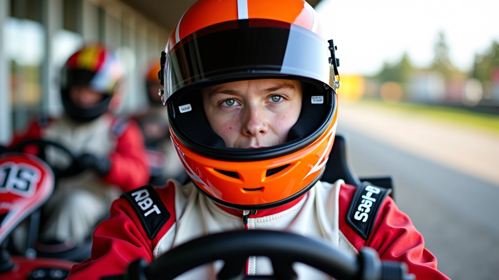
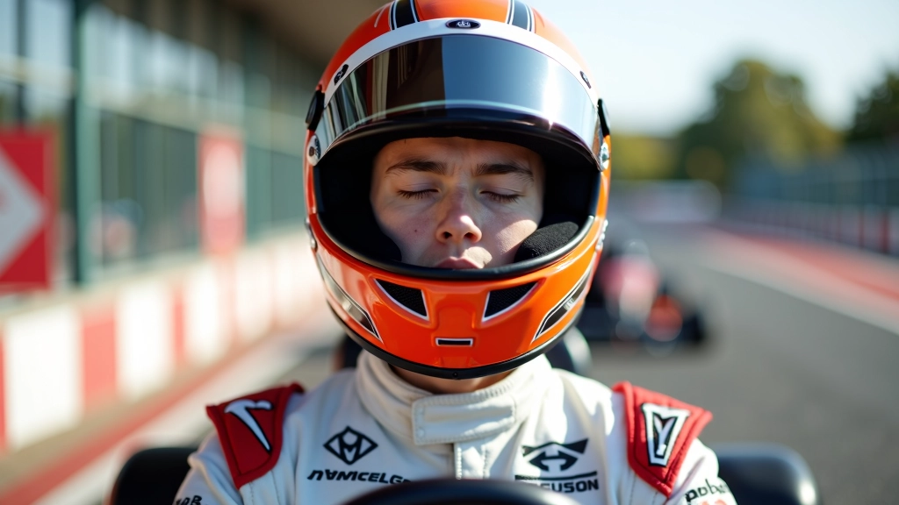

لماذا تحتاج إلى تمارين متخصصة؟
الانطلاقة السليمة من خط البداية ليست مجرد ضغطة على الدواسة. إنها تسلسل معقد يشمل تفاعل عصبي سريع وقوة عضلية منسقة. عندما تبدأ السباق، يجب أن يكون جسمك جاهزاً تماماً لتحويل الإشارة البصرية إلى حركة سريعة وقوية.
أكثر السائقين المبتدئين يعانون من التأخر في رد الفعل، أو يضغطون على الدواسة بقوة غير متساوية. هذا يؤدي إلى فقدان ثمينة من الثانية في أول 50 متر — وهي المسافة التي تحدد النتيجة في السباق. التمارين المنتظمة تقلل هذا التأخير بشكل ملحوظ.
نحن نركز هنا على تمارين يمكنك القيام بها خارج المسار. تستغرق وقتاً قليلاً، لكنها فعّالة جداً.
التمرين الأول: تمرين رد الفعل السريع
هذا التمرين يركز على تقليل الفترة الزمنية بين رؤيتك للإشارة والضغط على الدواسة. تحتاج إلى شريك أو تطبيق على الهاتف يصدر إشارات عشوائية.
- اجلس في وضعية الانطلاق (قدماك مرتاحة، يداك على عجلة القيادة)
- عندما تسمع الإشارة (صوت أو ضوء)، اضغط على الدواسة بسرعة
- قس الوقت — الهدف هو الوصول إلى 0.15-0.20 ثانية
- كرر هذا 15 مرة، ثلاث مرات في الأسبوع
الفائدة الحقيقية تظهر بعد 3-4 أسابيع. ستلاحظ أن انطلاقتك تصبح أسرع وأكثر اتساقاً.

ملاحظة مهمة
هذا المحتوى تعليمي بحت ويقدم إرشادات عملية حول تحسين تقنية الانطلاقة. النتائج تختلف من شخص لآخر حسب مستوى اللياقة والتركيز والممارسة المنتظمة. يُنصح بممارسة هذه التمارين تحت إشراف مدرب متمرس على المسار.
التمرين الثاني: تقوية عضلات الساق
قوة الدفع على الدواسة تأتي من الساق والفخذ. كلما كانت عضلات ساقيك أقوى، كلما استطعت تطبيق ضغط أكبر بسرعة أكبر.
التمارين البسيطة فعّالة جداً هنا:
- تمرين القرفصاء: 3 مجموعات من 15 تكرار
- تمرين صعود الدرج: صعود سريع لمدة دقيقة واحدة
- تمرين الضغط على الدواسة بثقل: استخدم جهاز محاكاة أو دواسة مقاومة
افعل هذا مرتين في الأسبوع، مع يوم راحة بين الجلسات. بعد شهر واحد، ستشعر بفارق واضح في القدرة على الدفع بقوة.
التمرين الثالث: تدريب التركيز والتناسق
الانطلاقة الناجحة تحتاج إلى تناسق بين يديك وقدميك. يجب أن تضغط على الدواسة بسلاسة بينما تحافظ على السيطرة على عجلة القيادة. هذا التمرين يحسن هذا التناسق بشكل كبير.
الطريقة: استخدم محاكي قيادة أو تطبيق على الحاسوب. ركز على الضغط على الدواسة بسرعة عند بدء كل سباق، بينما تحافظ على عجلة القيادة مستقيمة. اعمل على تحقيق 20 انطلاقة متقنة في كل جلسة تدريب.
المحاكي مفيد جداً لأنه يسمح لك بتكرار نفس الحركة مئات المرات دون الحاجة إلى الذهاب إلى المسار. تستطيع التدرب من المنزل، وتحسين تقنيتك بسرعة أكبر.
التمرين الرابع: تمرين التنفس والهدوء العقلي
الكثير من السائقين يفقدون التركيز قبل الانطلاقة مباشرة بسبب التوتر. نبضات القلب السريعة وعدم التنفس بشكل صحيح يؤثران على ردة الفعل.
قبل كل انطلاقة، خذ نفساً عميقاً ببطء — عد إلى ثلاثة وأنت تستنشق، ثم عد إلى أربعة وأنت تزفر. كرر هذا ثلاث مرات. هذا يهدئ جهازك العصبي ويحسن التركيز.
تدرب على هذا في كل مرة تقود فيها. بعد أسبوعين، ستصبح عادة تلقائية وستشعر بفارق حقيقي في أدائك.

خطة تدريب أسبوعية منتظمة
لتحقيق أفضل النتائج، اتبع هذا الجدول الأساسي:
السبت والثلاثاء
تمرين رد الفعل السريع (15 تكرار) + تدريب المحاكي (20 انطلاقة)
الأحد والخميس
تقوية عضلات الساق (3 مجموعات) + تمرين التنفس قبل النوم
الاثنين والجمعة
راحة نشطة — مشي خفيف أو تمارين تمديد فقط
الأربعاء
تدريب المحاكي (25 انطلاقة) + تمرين التنفس والهدوء
التزم بهذا الجدول لمدة شهر واحد على الأقل. ستلاحظ تحسناً واضحاً في سرعة انطلاقتك والاتساق بين سباق وآخر.
قياس التقدم
من المهم أن تقيس تقدمك. احتفظ بدفتر صغير لتسجيل أوقات انطلاقاتك في كل جلسة تدريب. ستجد أن المتوسط ينخفض تدريجياً.
- اليوم الأول: متوسط 0.35 ثانية
- الأسبوع الثاني: متوسط 0.28 ثانية
- الأسبوع الرابع: متوسط 0.22 ثانية
هذه الأرقام حقيقية وقابلة للتحقق. الرؤية المرئية للتقدم تزيد من التحفيز وتجعلك تستمر في التدريب.
الخلاصة
تحسين الانطلاقة ليس سراً معقداً. إنه مجرد عمل منتظم على المهارات الصحيحة. التمارين التي قدمناها هنا مثبتة وفعّالة. آلاف السائقين المبتدئين استخدموها وحققوا نتائج حقيقية.
ابدأ الآن. اختر أحد التمارين وجرّبه لمدة أسبوع واحد. ستشعر بفارق في الأداء. ثم أضف التمارين الأخرى تدريجياً. بعد شهر، ستكون انطلاقتك مختلفة تماماً — أسرع وأكثر اتساقاً وأكثر ثقة.